На сайте анализируются и сравниваются разные программы в категориях: средства удаленного управления компьютером, средства оперативного восстановления системы, cредства резервного копирования и восстановления данных.
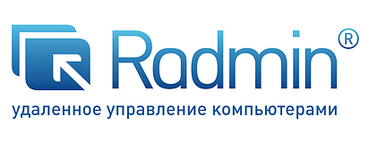
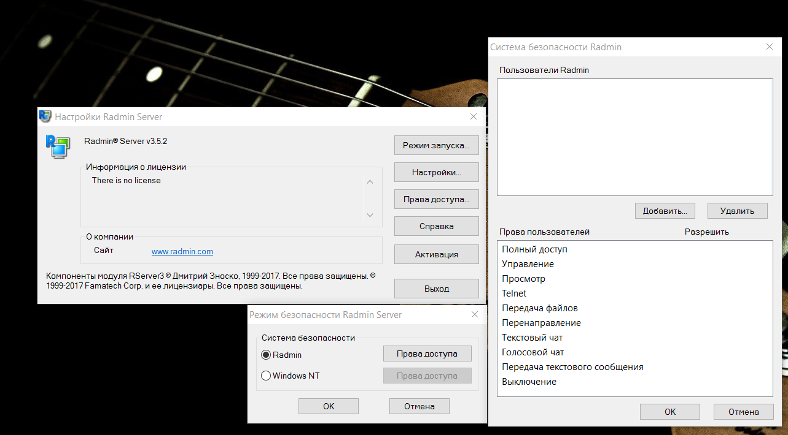
Рис.2. Права доступа
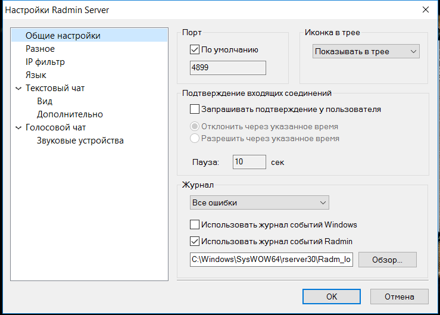
Рис.3. Настройки
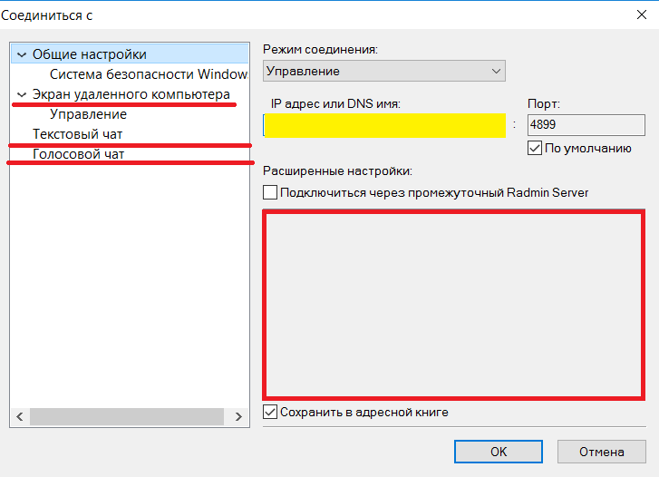
Рис.5. Соединение
Рис.6. Передача файлов
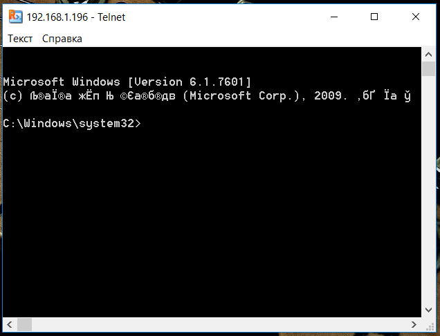
Рис.7. Telnet
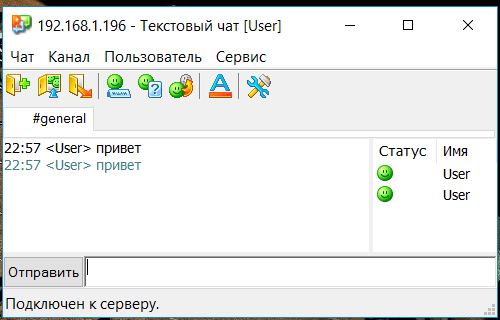
Рис.8. Текстовый чат
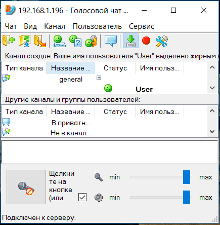
Рис.9. Голосовой чат
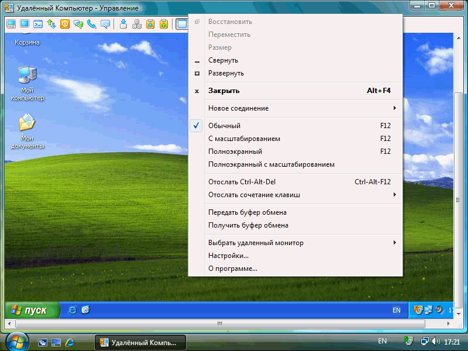
Рис.10. Управление
Рис.11. Ошибка подключения
Radmin (Remote Administrator)
программа созданная для удаленного управления ПК на платформе Microsoft Windows. Программа является условно бесплатной ( в платной версии если возможность подключения к более чем 5).Возможности программы:
- Управления несколькими удаленных компьютеров
- Графический интерфейс
- Передача файлов
- Передача голосовых и текстовых сообщений
Системные требования
Установка Radmin Server 3.x не имеет высоких системных требований. Если Ваш компьютер справился бы с установкой Windows 95 и выше, то им можно будет управлять удаленно с помощью Radmin. Radmin запускается даже на машинах Intel 486 с памятью 8 MB.
- Windows 10/8/7/Vista/XP/2012/2008/2003/2000 (32-bit) и Windows 10/8/7/Vista/XP/2012/2008/2003 (64-bit).
- Для подключения в режиме голосового чата необходимы звуковая карта, микрофон и колонки или наушники.
- Radmin будет успешно работать даже если на удаленном компьютере отключен монитор, клавиатура или мышь. Однако, некоторые компьютеры не запускаются без подключенной клавиатуры.
Принцип работы
Radmin состоит из 2 разных программ: Radmin Viewer (клиентская часть) и Radmin Server (серверная часть).
Серверная часть
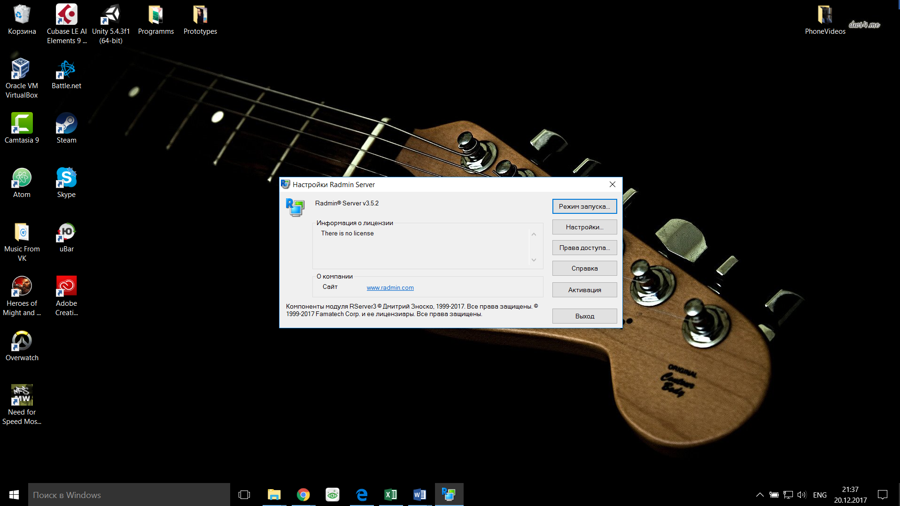 Рис.1. Главное окно серверной частиВ этом окне главными функциями является :
- Режим запуска
- Настройки...
- Права доступа
С помощью вкладки "Права доступа" пользователь может подключаться к удалённому компьютеру в разных режимах:
- Полный доступ
- Управление
- Просмотр
- Telnet (для русской кодировки ввести chcp 1251)
- Передача файлов
- Выключение
- Текстовый чат
- Голосовой чат
- Текстовое сообщение
Рис.3. Настройки
С помощью вкладки "Настройки" пользователь может:
- Изменить настройки подключения
- Отключить режимы соединения
- Включать фильтрацию IP
- Выбрать язык
- Настройки текстового чата (Изменить информацию о себе, Общий вид , а так же дополнительные настройки отображения , подтверждения и сохранение сообщений)
- Настройки Голосового чата (Главным является настройка утройства и чувствительность)
Клиентская часть
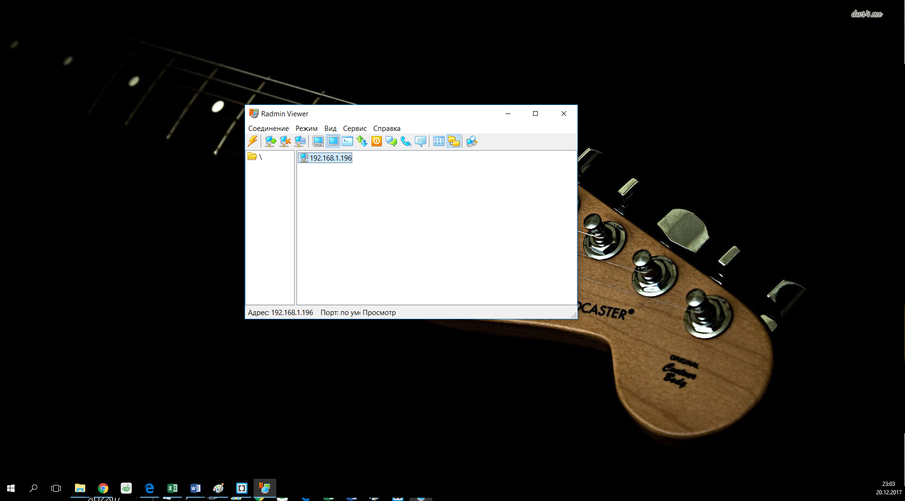 Рис.4. Главное окно клиентской частиГлавными функциями является :
- Соединение
- Режим соединения
- Создание папок
- Сервис
Рис.5. Соединение
Эта функция позволяет соединится с сервером. Для этого в желтой области нужно ввести IP адрес компьютера на котором запущена программа Radmin Server. Красным подчеркнуты главные настройки соединения, к ним нельзя перейти не вписав IP адрес. В красной области отображаются подлюченные компьютеры.
Режимы подключения
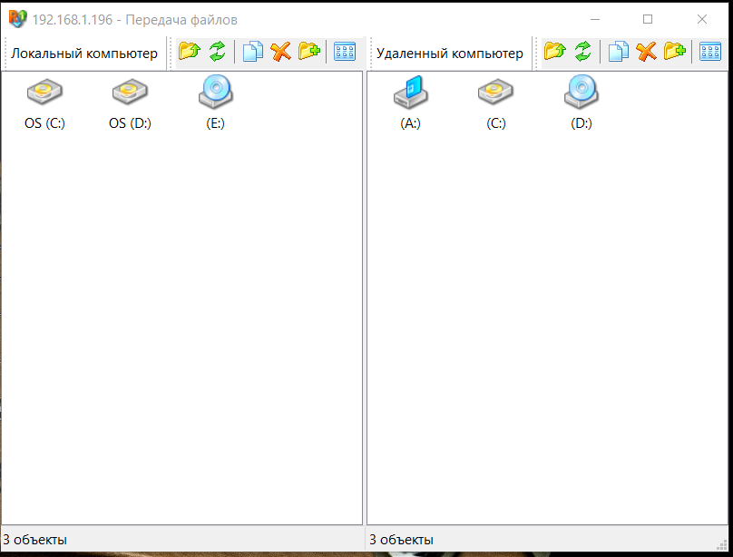Рис.6. Передача файлов
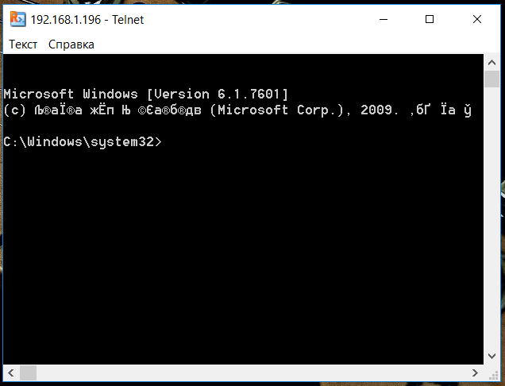
Рис.7. Telnet
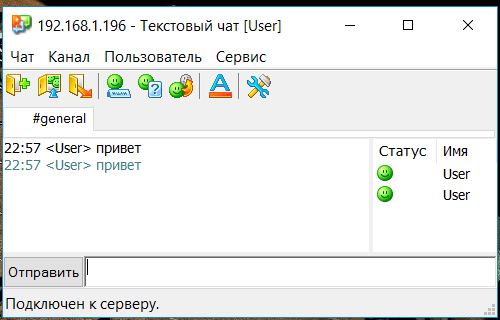
Рис.8. Текстовый чат
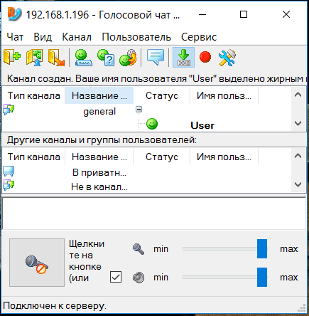
Рис.9. Голосовой чат
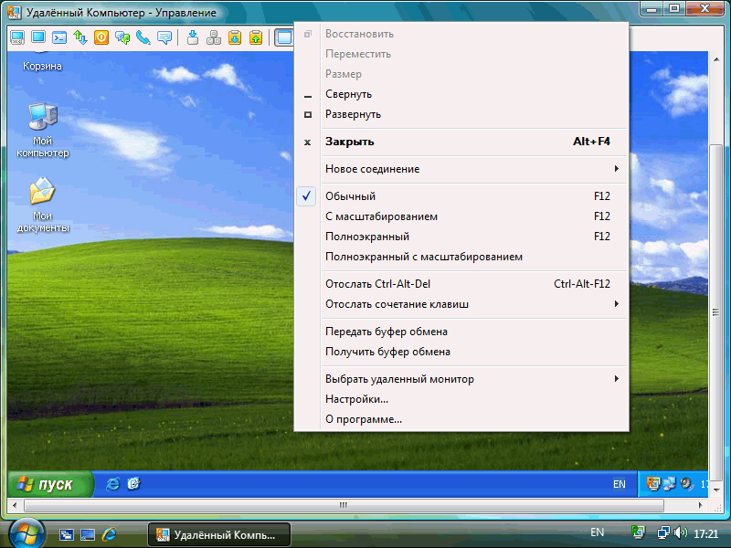
Рис.10. Управление
При отключении сервера на удаленном компьютере выходит ошибка подключения
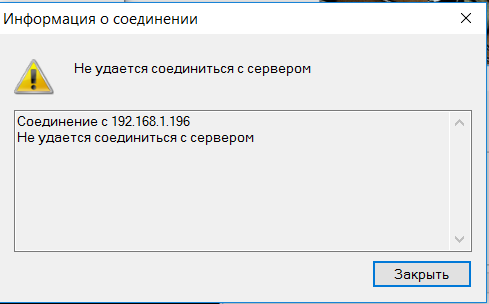Рис.11. Ошибка подключения
Безопасность
- Поддерживает формат AES
- Возможность использовать систему безопасности Windows
- Система безопасности Windows позволяет ограничивать удалённый доступ для отдельных пользователей или групп пользователей
- Поддерживает протокол Kerberos
- Запись в лог-файл имени пользователя и DNS расшифровки его адреса
Достоинства
- Высокая скорость работы
- Есть технология Intel AMT для подключения к BIOS другого компьютера
- Система безопасности Windows позволяет ограничивать удалённый доступ для отдельных пользователей или групп пользователей
- Поддерживает протокол Kerberos
- Запись в лог-файл имени пользователя и DNS расшифровки его адреса
Недостатки
- Нет бесплатной версии , только на 30 дней
- Данные буфера обмена между локальным и удаленным компьютером синхронизируется вручную
- Пароль для подключения необходимо вводить каждый раз
- Невозможно работать с компьютером имеющий "серый" IP
LiteManager Pro/Free
программа удаленного управления компьютерами через Интернет или администрирования в локальной сети. По своему функционалу сильно похожа на Radmin. Имеется бесплатная версия отличия от Pro (Подходит для корпоративного использования. Стоимость 300 рублей за 1 удаленный компьютер или 15000 рублей за неограниченное подключение) которой :
- Запись рабочего стола сервера по расписанию.
- Аудио видео чат
- Удаленное изменение настроек сервера
Возможности программы:
- Управления несколькими удаленных компьютеров
- Графический интерфейс
- Передача файлов
- Запись экрана по расписанию
Системные требования
- Процессор с тактовой частотой 1200 MHz или более мощный.
- Оперативная память 256 Мб или больше.
- Свободное место на жёстком диске от 30 Мб.
- Архитектура с разрядностью 32 бит или 64 бит (x86 или x64).
- Операционная система Windows XP, Windows Vista, Windows 7, Windows 8, Windows 10
Принцип работы
LiteManager так же как и Radmin делется на 2 программы: RomServer и RomViewer.
Серверная часть
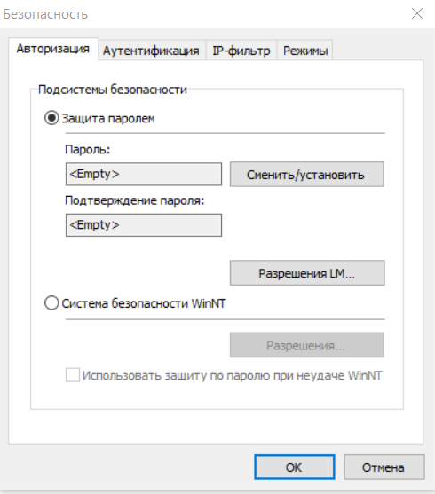Рис.12. Установка Серверной части
При установке программа требует ввести пароль доступа, а так же дополнительные настройки такие как выбор режима управления.
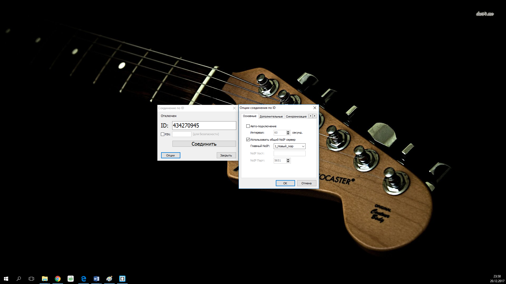
Рис.13. Главное окно серверной части
В этом окне главными функциями является :
- Ввод ID - создается автоматически. Это поле поможет найти компьютер которым собираются управлять.
- Ввод PIN
- Опции соединения по ID
- Задание NoIP Server
Клиентская часть
Рис.14. Главное окно клиентской части
Интерфейс LiteManager более совершенен, чем Radmin и имеет больше функций.
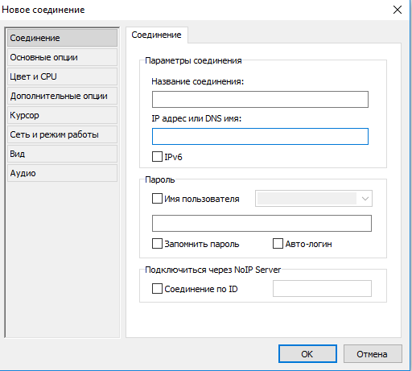Имеется 4 области:
- Голубая - панель быстрого доступа в которую входит большенство функций.
- Желтая - топлогия папок и подключений.
- Красная - отображение всех соединений
- Фиолетовая - режимы подключения и возможные действия.
Рис.15. Новое подключение
Подключение можно совершить по IP адресу или через DNS имя, а так же через NoIP Server указав ID.
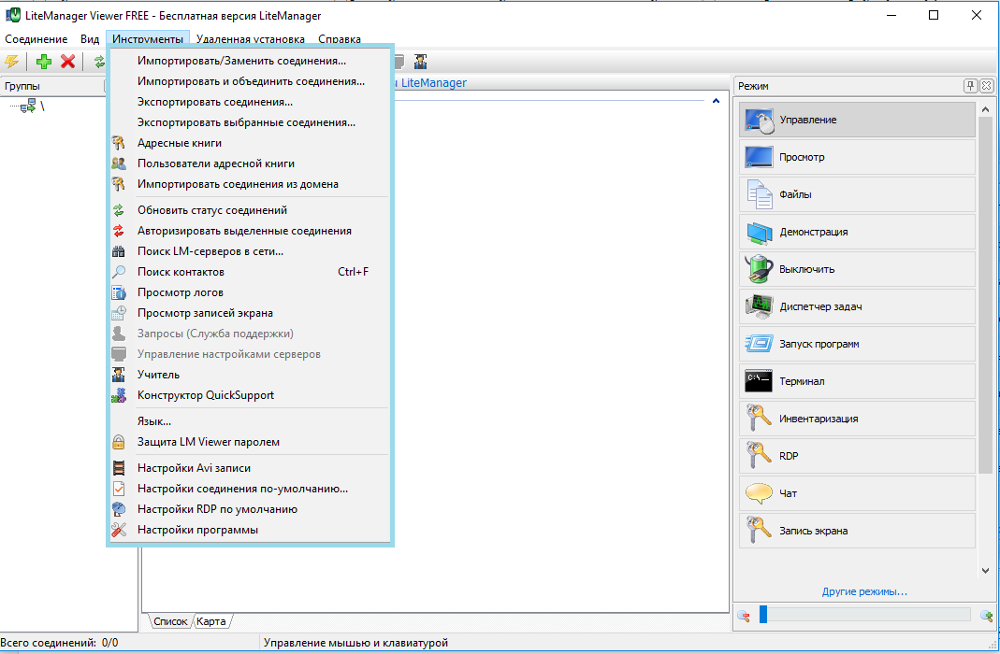Так же как в Radmin есть настройка подключения в которую входит:
- Режим отображения экрана
- Формат цвета и Загрузка CPU
- Дополнительные опции
- Изменение порта программы
- Аудио настройки
Рис.16. Инструменты
Режимы подключения
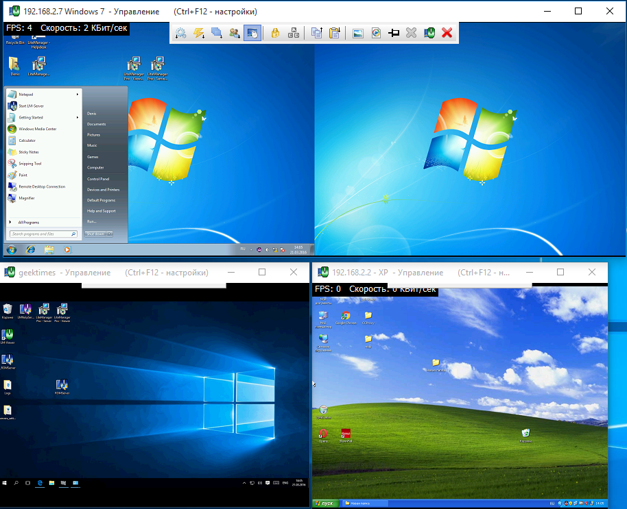
Рис.17. Управление
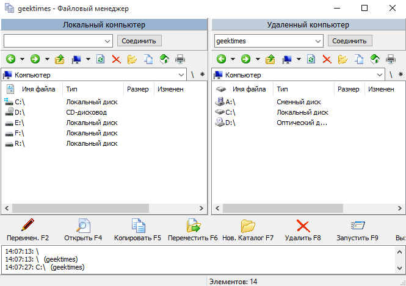
Рис.18. Файловый менеджер
Передача файлов предоставляет доступ к файловой системе компьютера с функциями просмотра, копирование или удаления файлов. Есть возможность запустить исполняемый файл или распечатать документ.
Рис.19. Диспетчер задач
Встроенный диспетчер задач для управления процессами и сервисами компьютера.
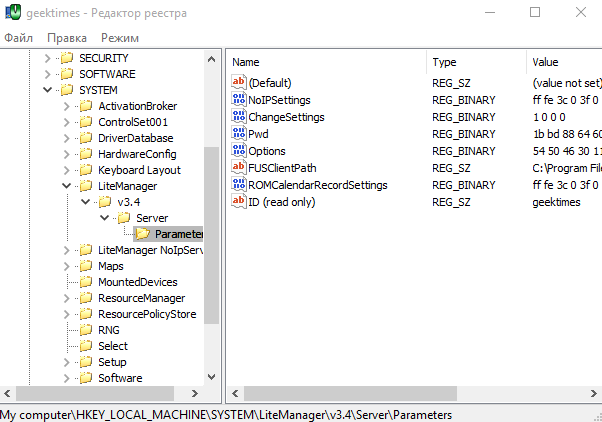Рис.20. Редактор реестра
Встроенный редактор реестра, во многом аналогичен системной утилите regedit.
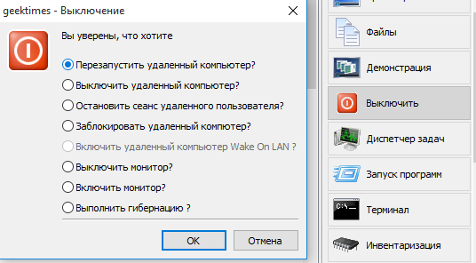Рис.21. Выключение
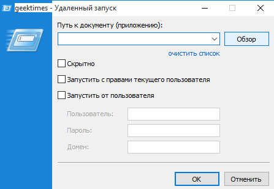
Рис.22. Удаленный запуск
Отдельный режим удаленного запуска программ.
Достоинства
- Помимо стандартных функций удаленного доступа есть так же уникальные: инвентаризация, запись экрана, удаленная установка и т.д.
- Бесплатная с 30 доступными подключениями.
- Настройка собственного ID сервера
Недостатки
- Некоторые уникальные режимы доступны только в Pro версии
- Для корпоративного использования 30 компьютеров мало
Ammyy Admin
Приложение Ammyy Admin является одним из наиболее популярных приложений для установления удалённого доступа между компьютерами. Благодаря стабильной работе, а также низким требованиям к оборудованию компьютера приложение широко используется как в корпоративном сегменте, так и обычными пользователями. В приложении реализован полный набор функций, которые наиболее часто используются при работе с удалённым компьютером, включая файловый менеджер, и голосовую связь. Амиадмин скачать вы можете на данной странице нашего сайта.
Особенности
- Не требуется установка программы.
- Не требуется перенастройки сетевых экранов и Firewall.
- Опция только для просмотра.
- Аутентификация прав на основе ID аппаратного обеспечения и/или по паролю.
- Совместима с существующими программами удалённого доступа: VNC, Terminal Server и другими.
- Поддержка Microsoft Remote Desktop Protocol (RDP).
- Может работать как системный сервис (удаленное администрирование серверов).
- Позволяет осуществлять удаленную перезагрузку, вход в систему, выход, смену пользователей.
- Аудио чат.
- Файловый менеджер (обмен файлами и папками).
- Автоматическая и ручная настройка скорости работы (качество изображения/быстродействие).
- Существует собственный программный роутер, поставляемый при покупке лицензии на программу.
Системные требования
- Windows 2000/XP/Vista/7/8.
- Windows Server 2000/2003/2008.
- 32-bit и 64-bit.
Обзор интерфейса
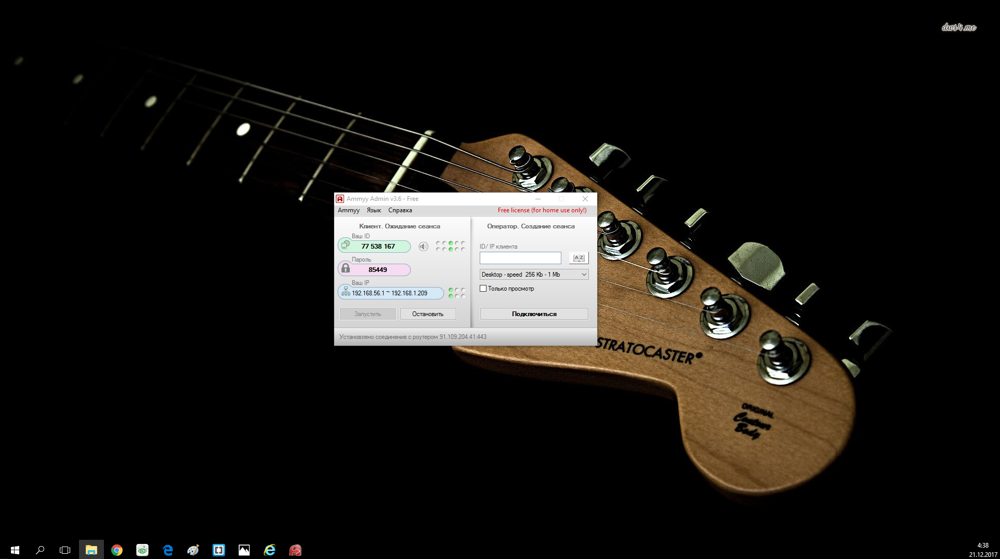Рис.23. Главный экран
В главном окне программы отображены ID пользователя, пароль для доступа, IP адрес и поля для ввода IP или ID компьютера к которому собирается подключаться пользователь.
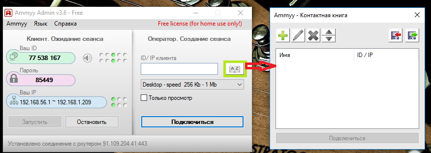Рис.24. Контактная книга
Рядом с полем выбора режима подключения находится кнопка открытия контактной книги.
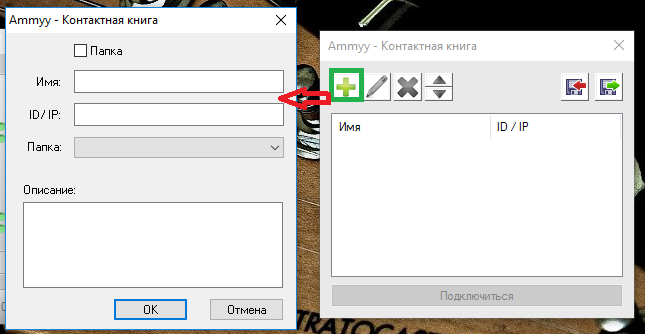Рис.25. Добавление контакта
Для добавления контакта нужно щелкнуть по кнопке с плюсиком и откроется окно с вводом данных.
Настройки
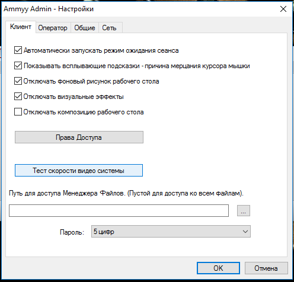
Рис.26. Настройки клиента
Первой вкладкой настроек является клиент где можно отключить некоторые функции, проверить скорость видео системы и задать путь доступа Менеджера файлов.
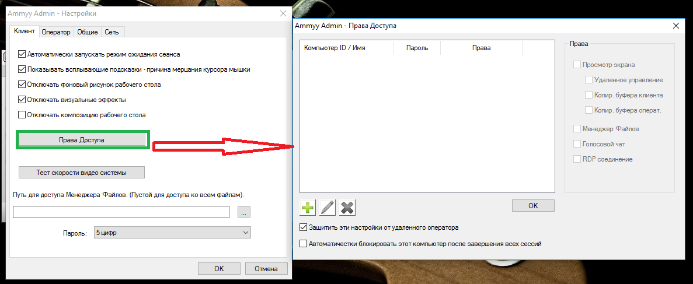Рис.27. Права доступа
При нажатии на кнопку Права доступа можно задать определить права на кажное подключение и управлять ими.
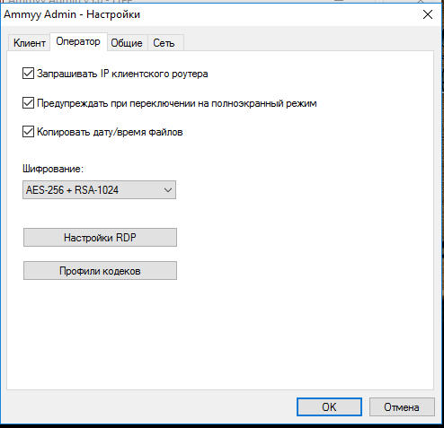Рис.28. Настройки оператора
Во второй вкладке настроек можно задать настройки при подключению к клиенту , шифрование, настройки RDP и профили кодеков.
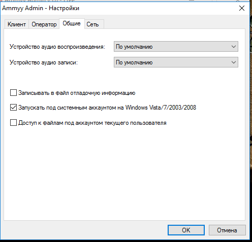Рис.29. Настройки Общие
В третьей вкладке Общие задаются параметры передачи звука и возможность записывать отладочную информацию.
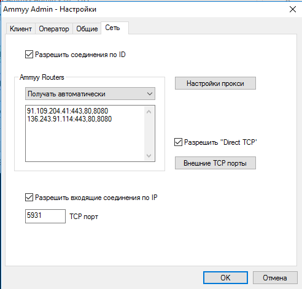Рис.30. Настройки Сеть
В последней вкладке задаются настройки прокси и разрешение на подключение по ID и IP.
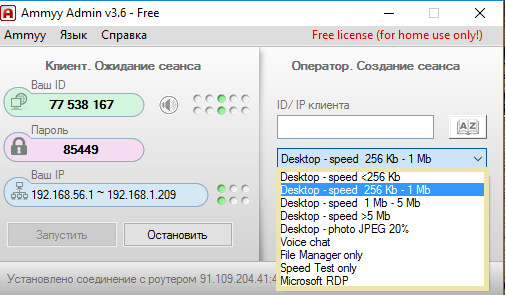Рис.31. Выбор режима доступа
В отмеченно области отображается поле с выбором режимов подключения.
Режимы подключения
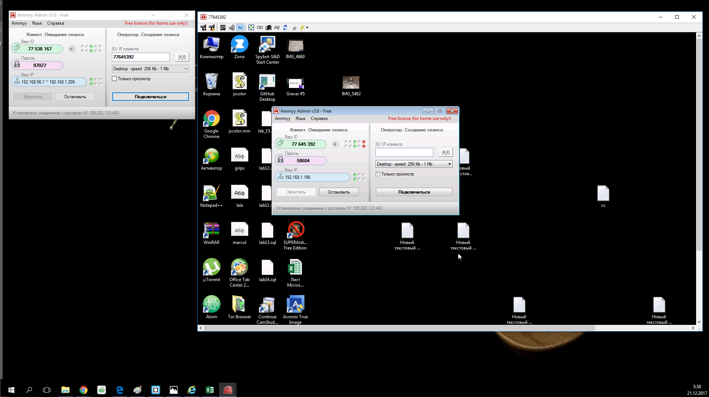
Рис.32. Режим управления
Так выглядит режим управления компьютером.
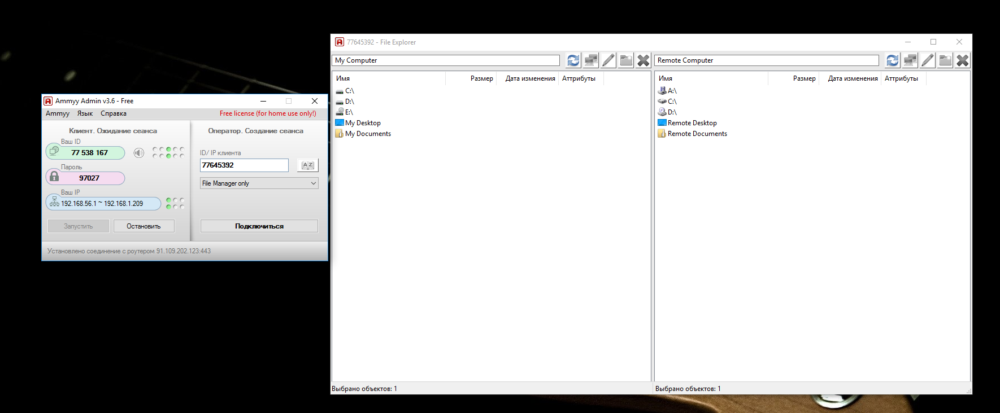Рис.33. Режим обмена файлов
Так выглядит режим обмена файлов.
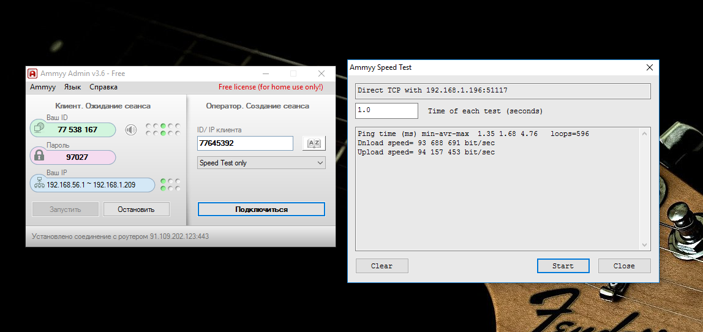Рис.34. Режим проверки скорости
Так выглядит режим проверки скорости соединения.
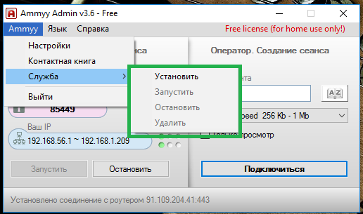Рис.35. Служба
В всплывающем списке Ammy есть графа Служба где можно установить, запустить,остановить и удалить программу.
Лицензия
Компания Ammyy предоставляет 3 типа платных лицензий: Starter, Premium и Corporate.
Free версия используется только в домашних целях и может быть ограничена 15 часами за последние 30 дней на 1 компьютер*. Количество параллельных исходящих/входящих подключений - 2/1. Нельзя сохранять пароль для доступа.
- Starter (1200 руб.)- лицензия, предоставляющая неограниченный доступ для работы с удаленными компьютерами в локальной сети, при подключении напрямую по IP или HostName. Может работать без подключения к Интернет. Удаленное соединение между компьютерами за NAT ограничено, как и в бесплатной версии, 15 часами в месяц на 1 компьютер (условия ограничения могут изменяться без уведомления пользователей).
- Premium (2400 руб.)- предоставляет неограниченный по времени и типу соединения (напрямую по IP/HostName или через Интернет для компьютеров за NAT). В данной версии существует ограничение только на количество одновременных удаленных соединений. Одновременно управлять/просматривать можно 4 удаленных машины. Количество одновременных входящих подключений равно 2.
- Corporate (3600 руб.)- лицензия без ограничений
Free версия используется только в домашних целях и может быть ограничена 15 часами за последние 30 дней на 1 компьютер*. Количество параллельных исходящих/входящих подключений - 2/1. Нельзя сохранять пароль для доступа.
Безопасность
- Все данные зашифрованы с помощью гибридного алгоритма шифрования по стандартам AES-256 + RSA (по умолчанию только AES-256), используются различные ключи для каждой сессии.
- Не открываются порты на локальном и удалённом компьютере.
Достоинства
- Простая.
- Минимальные настройки.
- Не требует особых знаний.
Недостатки
- Минимум функций удаленного подключения.
- Отсудствие администрирования множеста устройств в бесплатной версии.
- Срабатывание антивирусных программ (при настройках антивирусов «по умолчанию»).
- Платная для комерции.
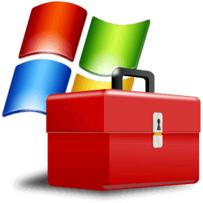
Рис.36. Главный экран
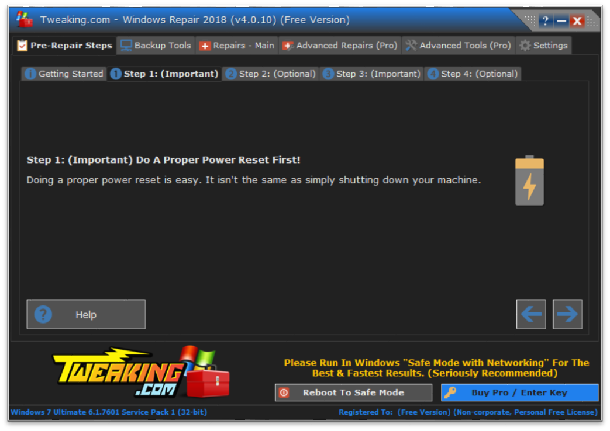
Рис.37. Правильный сброс питания
Рис.38. Предварительное сканирование
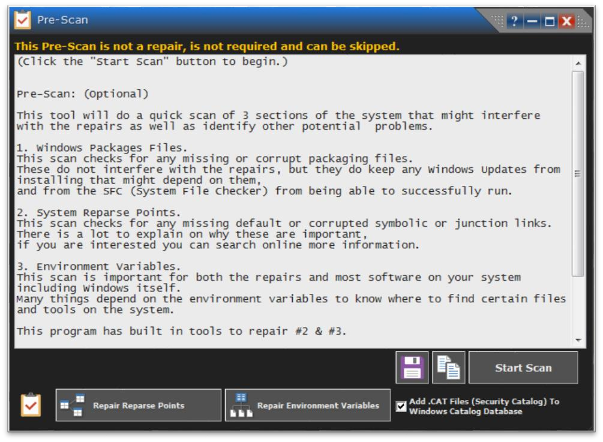
Рис.39. Описание предварительного сканирования
Рис.40. Процесс сканирования файлов пакета Windows
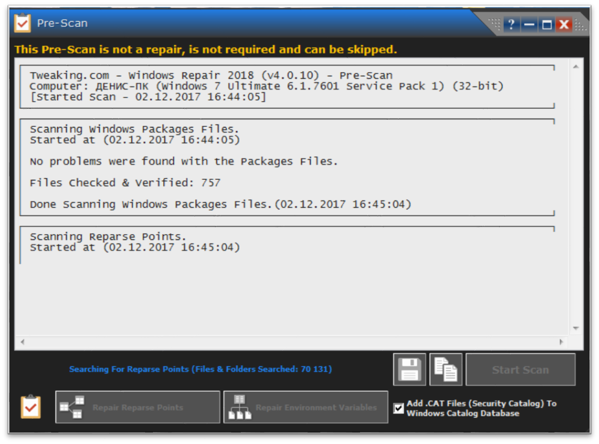
Рис.41. Завершение сканирования файлов пакетов Windows
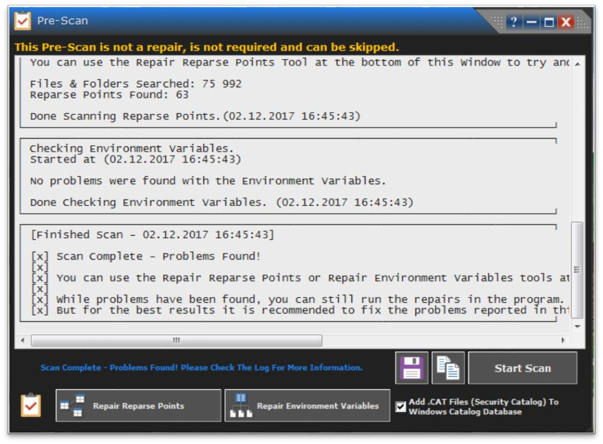
Рис.42. Завершение сканирования
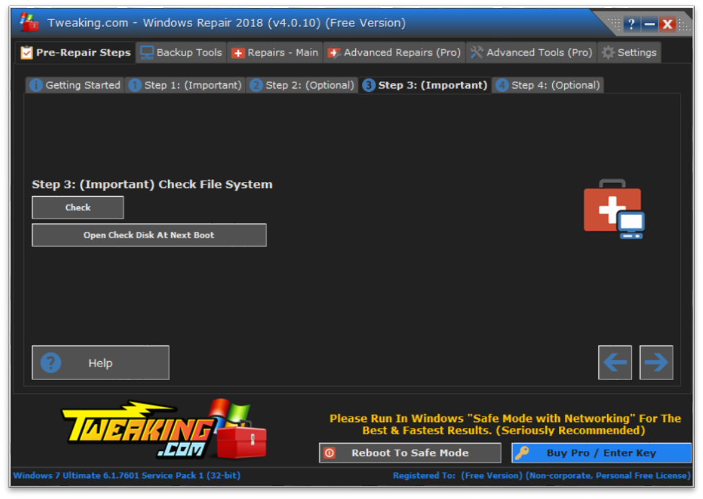
Рис.43. Проверка файловой системы
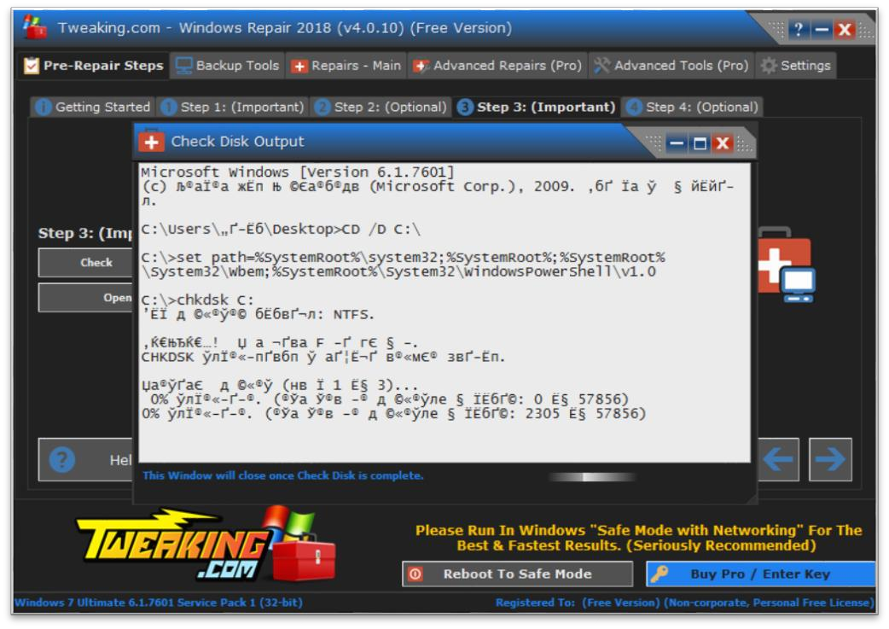
Рис.44. Проверка дисков
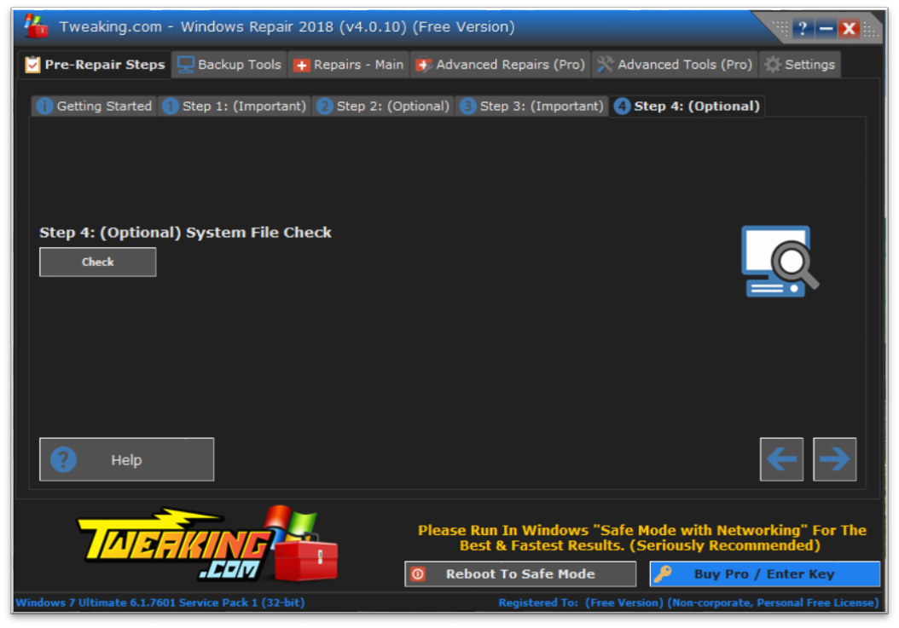
Рис.45. Проверка системных файлов
Рис.46. Проверка системных файлов
Рис.47. Завершение сканирования
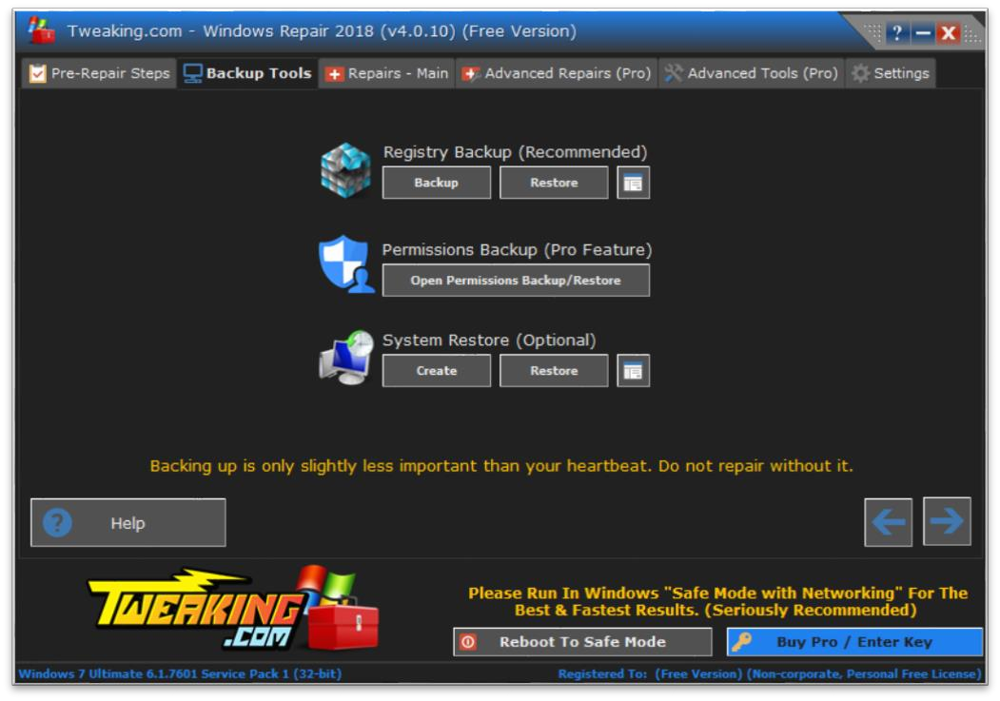
Рис.48. Выбор параметров восстановления
Рис.49. Выбор элементов восстановления
Рис.50. Расширенные настройки восстановления
Рис.51. Расширенные настройки
Windows Repair
Инструмент все-в-одном для ремонта системы . Предназначен для восстановления различных параметров Windows к их значениям по умолчанию. Помогает исправить большинство известных проблем, в том числе ошибки реестра и права доступа к файлам, а также проблемы с Internet Explorer, Windows Update, Windows Firewall и многое другое. Перед запуском Windows Repair будет предложено выполнить 4 простых действия предупреждающие ошибки в работе системы: проверка на вирусы, проверка жесткого диска, проверка на поврежденные файлы системы и создание точки восстановления. Затем можно выбрать один из трех режимов Basic, Advanced и Custom, каждый из которых предлагает различные варианты ремонта системы.
Функции программы:
- Исправление ошибок реестра
- Исправление прав доступа к файлам
- Ремонт WMI
- Ремонт Windows Firewall
- Ремонт Internet Explorer
- Ремонт MDAC и MS Jet
- Ремонт Hosts файлов
- Ремонт иконок
- Ремонт Winsock и DNS Cache
- Удаление временных файлов
- Исправление настроек Proxy
- Исправление Windows Updates
Интерфейс
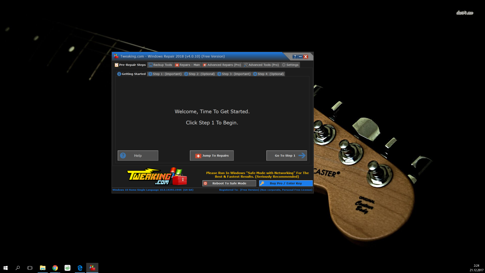Рис.36. Главный экран
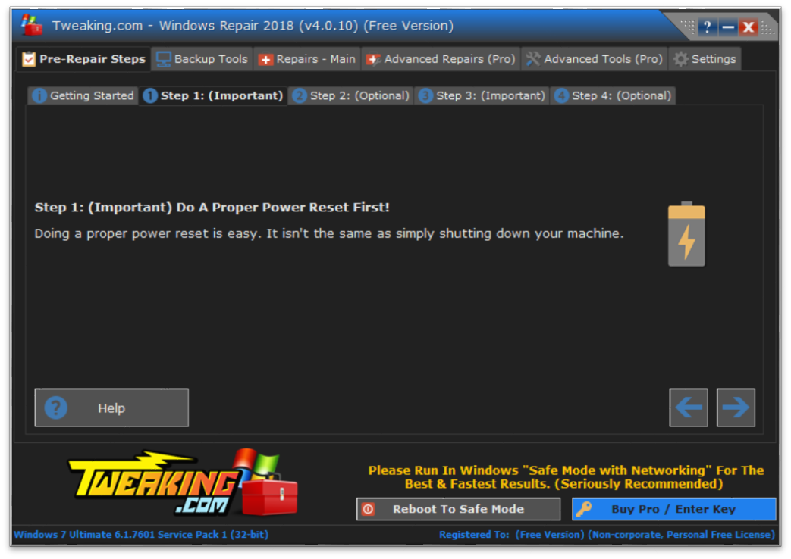
Рис.37. Правильный сброс питания
Первым шагом нам предлагают сделать правильный сброс питания, для этого надо перезагрузить компьютер.
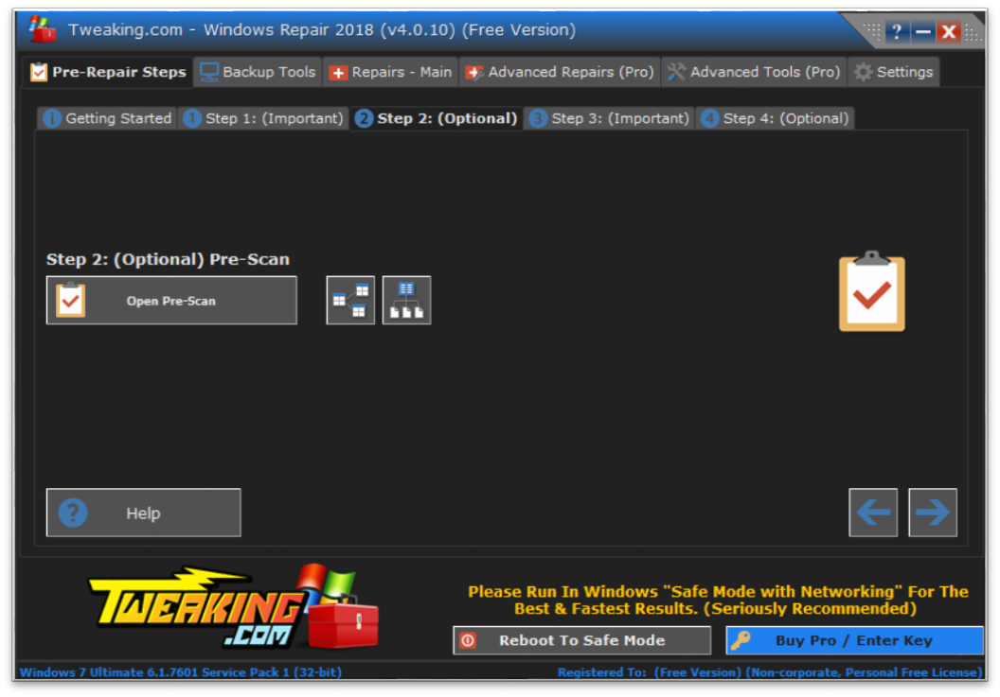Рис.38. Предварительное сканирование

Рис.39. Описание предварительного сканирования
Данное предварительное сканирование предлагает сканирование 3-х основных секций системы для поиска элементов, которые нужно восстановить:
- Файлы пакеты Windows
- Системные точки повторной обработки
- Параметры среды
Рис.40. Процесс сканирования файлов пакета Windows

Рис.41. Завершение сканирования файлов пакетов Windows

Рис.42. Завершение сканирования

Рис.43. Проверка файловой системы

Рис.44. Проверка дисков

Рис.45. Проверка системных файлов
Следующий шаг предлагает нам проверить системные файлы.
Рис.46. Проверка системных файлов
Для этого запускается команда /scannow в командной строке Windows.
Рис.47. Завершение сканирования

Рис.48. Выбор параметров восстановления
После процесса сканирования нам предлагается выбрать способ восстановления системы: восстановление реестра, восстановление прав или же системное восстановление.
Рис.49. Выбор элементов восстановления
Следующий шаг предлагает нам выбрать те элемента, которые мы хотим восстановить. В нашем случае это системные параметры и настройки.
Рис.50. Расширенные настройки восстановления
Расширенные настройки восстановления представлена на рисунке 99. В этом случае требуется приобрести профессиональную версию программы.
Рис.51. Расширенные настройки
Вот и вся программа. Достаточно удобная для того, чтобы восстановить системные настройки и службы. В случае если у пользователя постоянно возникают ошибки, то можно воспользоваться данной программой, не прибегая к переустановке операционной системы.
EMC NetWorker
Пользователи NetWorker создают инфраструктуру резервного копирования нового поколения за счет интеграции этого программного обеспечения с Data Domain.NetWorker делает процесс создания резервных копий централизованным и автоматизированным.
NetWorker работает по схеме сервер — клиент. То есть на выделенный хост, который занимается резервным копированием, ставится сервер NetWorker, а на хосты, данные которых мы хотим сохранить, ставим клиент NetWorker.
Резервные копии NetWorker хранит на тех носителях, которые вы ему предоставите, будь то СХД, VTL, любая ленточная библиотека, или выделенная шара (CIFS, NFS).NetWorker может работать на уровне приложений, будь то VMware, MS SQL, Oracle, Exchange.
NetWorker работает по схеме сервер — клиент. То есть на выделенный хост, который занимается резервным копированием, ставится сервер NetWorker, а на хосты, данные которых мы хотим сохранить, ставим клиент NetWorker.
Резервные копии NetWorker хранит на тех носителях, которые вы ему предоставите, будь то СХД, VTL, любая ленточная библиотека, или выделенная шара (CIFS, NFS).NetWorker может работать на уровне приложений, будь то VMware, MS SQL, Oracle, Exchange.
Внешний вид
Рис.52. Manager Console
Так выглядит только что установленный NetWorker
Рис.53. Подключить админестратор
При нажатии Launch NetWorker Administration, открывается окно основного управления сервером NetWorker.
Рис.54. Вкладка Мониторинг
На первой вкладке «Monitoring» будут все задания на создание резервных копий или их восстановления.
Рис.55. Вкладка Конфигурации
На второй вкладке «Configuration» производятся основные настройки процесса резервного копирования.
Рис.56. Вкладка Устройства
Третья вкладка «Devices» показывает все устройства, подключенные к NetWorker, которые участвуют в процессе бэкапа: библиотеки (Ленточные или VTL), драйвы, узлы хранения данных NetWorker, Data Domain и Avamar.
Рис.57. Вкладка Данные
Четвёртая вкладка — «Media» устройства, которые относятся к сохранности данных.
Рис.58. Вкладка Восстановление
На последней вкладке будут видны только задания на восстановление данных.
Установка клиентов
Рис.59. Подключение клиента
Сразу после установки открывается NetWorker Server Selection.
Рис.60. Добавление клиента
Добавление клиента в сервере NetWorker
Открываем вкладку Configuration > правый клик по Clients > New Clients Wizard.
Рис.61. Подключение клиента
Для рядового пользователя есть возможность самостоятельно инициировать восстановление данных, создавать резервные копии того, что он хочет, или архивировать данные. Для этого надо запустить программу NetWorker User, которая устанавливается вместе с клиентом NetWorker.
Отчеты
Рис.62. Подключение клиента
Отчетность о проведении Создания Резервных Копий, также одна из самых привлекательных сторон NetWorker. Отчёты можно настроить так, чтобы они приходили по электронной почте или через SNMP на какую-либо службу мониторинга.
Symantec Backup Exec
программное обеспечение для резервного копирования и восстановления данных на Windows, Linux и UNIX системах в сетях малого и среднего бизнеса. Есть бесплатная версия , платная стоит около 25000 рублей.Рис.63. Внешный вид
Рис.64. Подключение
Дня начала работы нужно подключиться к серверу.
Рис.65. Вкладка резервного копирования и восстановления
Резервное копирование бывает 3 видов:
- Резервное копирование на диск
- Создать на диске ,а затем преопразовать в виртуальную машину
- Создать на диске и одновременно преопразовать в виртуальную машину
Системные требования
- Операционная система - Windows Server 2008/2012, либо Windows Server 2003;
- Оперативная память - не менее 1 Гбайт оперативной памяти;
- рекомендуемая конфигурация – не менее 2 Гбайт;
- Жесткий диск - не менее 1,26 Гбайт свободной емкости при типичной инсталляции Backup Exec либо не менее 1,91 Гбайт если пакет инсталлируется со всеми опциями.
Для установки агента Backup Exec 2015 для Windows требуется компьютер в следующей конфигурации:
- не менее 512 Гбайт оперативной памяти;
- минимум 188 Мбайт свободного места на диске.
Преимущества Backup Exec
- Защита неограниченного числа виртуальных систем для одного хоста.
- Значительное снижение времени простоя и потерь данных благодаря быстрому восстановлению одним щелчком мыши необходимой информации.
- Восстановление всей системы на первоначальном или любом другом оборудовании или в виртуальной системе. При этом восстановление занимает столько же времени, сколько запуск самой виртуальной системы.
- Использование единого унифицированного и масштабируемого решения позволяет уменьшить сложность резервного копирования, исключить лишние устройства хранения, снизить затраты и риски
Commvault
платформа для резервного копирования приложений, баз данных, файловых систем, виртуальных машин и физических серверов. Исходные данные при этом могут быть на любой площадке: у нас – на стороне клиента, в другом коммерческом дата-центре или облаке.В консоли Commvault доступны все основные операции:
- Добавление и удаление серверов на резервное копирование.
- Настройка iData Agent.
- Создание и ручной запуск заданий.
- Самостоятельное восстановление резервных копий.
- Настройка оповещений о статусе задач резервного копирования.
- Разграничение доступа к консоли в зависимости от роли и группы пользователей.
Внешний вид
Рис.66.Главное окно.
Возможность разграничивать права.
В Commvault есть возможность устанавливать разные уровни доступа к управлению резервным копированием. Так называемые “роли” определяют, какие действия будут разрешены пользователю по отношению к объектам резервного копирования. Например, разработчики смогут только восстанавливать сервер с базой данных в определенное место, а администратор сможет запускать внеочередное резервное копирование для этого же сервера, добавлять новых пользователей.
Шифрование.
Шифровать данные во время резервного копирования через Commvault можно следующими способами:
на стороне клиентского агента: данные в этом случае будут передаваться в систему резервного копирования уже в зашифрованном виде;
на стороне Media Agent;
на уровне канала: данные шифруются на стороне клиентского агента и расшифровываются на Media Agent Server.
Доступные агоритмы шифрований: Blowfish, GOST, Serpent, Twofish, 3-DES, AES (рекомендуемый Commvault).